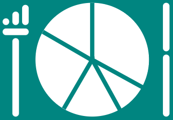

<mat-toolbar color="accent" style="position: sticky !important; height: 5rem">
  <button mat-icon-button (click)="triggerSidenav()">
    <mat-icon>list</mat-icon>
  </button>
  <button
    mat-flat-button
    color="accent"
    style="border-radius: 20px; height: 50px"
    (click)="onClick()"
  >
    
    <!-- <label style="margin: 0.5rem 0.5rem 2rem 0.5rem">DataFood</label> -->
  </button>
  <span class="example-spacer"></span>
  <app-search-product-autocomplete
    style="margin-right: 1rem"
    [isLabelDisplayed]="false"
    [isRedirectOnSelect]="true"
  ></app-search-product-autocomplete>
  @if(user$ | async; as user){ @if(!isUserSubscribed){
  <button
    mat-flat-button
    color="primary"
    style="border-radius: 20px; margin: 1rem"
    [routerLink]="['/subscribe']"
    routerLinkActive="router-link-active"
  >
    <span>S'abonner</span>
  </button>
  }
  <app-profile></app-profile>
  } @else {

  <button
    mat-fab
    extended
    color="primary"
    style="margin: 1rem 1rem 1rem 0rem"
    (click)="login()"
  >
    <span>Se connecter</span>
    <mat-icon>person</mat-icon>
  </button>
  <button
    mat-fab
    extended
    color="primary"
    style="margin: 1rem 1rem 1rem 0rem"
    (click)="register()"
  >
    <span>S'inscrire</span>
    <mat-icon>person_add</mat-icon>
  </button>

  }
</mat-toolbar>
<app-banner></app-banner>
